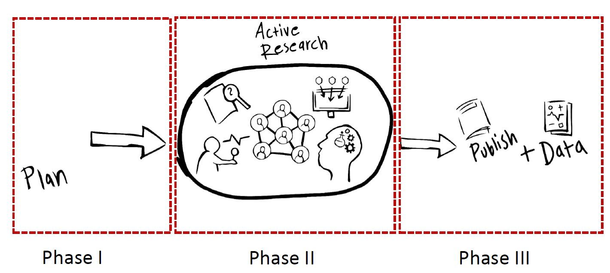

Sharing data at different stages of the research data lifecycle
Key takeaways
- Good data management and knowing how to share what with whom builds trust and confidence among collaboration partners.
- Data sharing should be discussed early on in projects - both what data to share and when to share data.
- Before sharing data always consider if there are legal or ethical limitations on data sharing.
- Access to high quality data is valuable for both academic and industrial partners.

Timing and strategy when sharing data
You may need to share data with other stakeholders at different stages of the research data life cycle. You may also want to set different access levels depending on both time and with whom data is shared. Data is increasingly considered a valuable asset, meaning that planing your data sharing strategically is becoming increasingly important.
Phase I, Planning:
At the planning stage, there is not yet much data to manage. However, by considering a few points early on, you can do some preparatory work in order to make things easier in the long run. For a start, consider the following points:
You may want to share ideas on how to conduct new research or have data from promising early test results to share with potential collaborators. There are some key legal aspects to consider at this stage, learn more about those in the section on legal considerations. At this stage, you may also be applying for external funding, meaning that you are sharing a research plan and possibly a first data management plan with a research funder. It is important to find out if the funder has any requirements for research data management. Example requirements would be writing a data management plan, or that you will share your data according to the FAIR principles. In the latter case, planning for data sharing has implications for how you organize and document your data from the start. Consider the costs for data management early, especially if one aim of the project is to share your data after the project. Some research funders can assign extra funding for data management if you apply for it. How to set up storage, communication, sharing and software for analysis. This depends on several factors such as type of data, confidentiality level, amount of data and what type of analysis to occur. Specific choices may differ a lot between different research projects, but try to describe costs, storage and how to share data in your data management plan.
Phase II, Active research:
In the active research phase you are collecting or producing data. At this point sharing of data usually occurs within a limited group of people involved in the project. Data could be transferred between different stakeholders or shared within a project platform with file storage access for everyone tied to the research project. There are also many facilities and centras where resources like expensive equipment generating data is used by many different research groups in different projects. Make sure that everyone involved knows about and agrees on where and how data can be shared.
Phase III: Publishing:
When publishing your results (including your data) your work will be easier if you have prepared data and metadata for sharing non-confidential data openly in a suitable data repository. Any confidential data should also be stored for at least ten years and documented so that the research process can be reviewed upon request. Learn more on what requests can be made, and when confidential data may or may not be made available on request in the section on legal considerations for data management.
Sharing the data that you base your results openly when publishing your results is, with a few exceptions, a good strategy to increase the impact of your research. By providing links from publication to data and from data to publication(s) you make it easier for readers of your publication to find and re-use your data. It also enables someone who wants to re-use your data to find, read and cite your publication.
The current recommendations for suitable data publishing channels can be found at the KTH Research Data Office web page on sharing data.
Considerations for larger collaborations:
During a collaborative research project you share data among collaborators during the active research phase. There are possibly many different stakeholders involved, you may be sharing data with both academic an industrial partners as well as people in different roles such as undergraduate students, PhD students, Post-docs, Senior researchers, consultants and business partners.
Let’s hear Anna Pernestål and Jonas Anund Vogel talk about the importance of sharing data between different stakeholders in different research projects and challenges and opportunities when sharing data at Integrated Transport Research Lab and Live-in-lab at KTH.
Systems and platforms
Discuss early on which platforms you will use for sharing data and ensure that the use of file-sharing platforms, software for analysis etc. is in compliance with guidelines for the organisations that participate in the collaboration. Data platforms/file sharing services should have good access control and an authentication process compliant with what’s required for the confidentiality level. You also need versioning of the files and the ability to trace who accessed what parts of the data. This functionality is often built into many modern file-sharing systems, but do check what can be done before deciding on systems and platforms. In case you are setting up your own systems or databases you have to consider this.
Automated metadata creation
If data is collected in an automated fashion, you should also try to set-up automatic metadata creation. This will simplify the work preparing data for sharing. In projects producing or using large amounts or complex data, it is a good idea to assign a data steward or a data manager for the project. In other areas there might be a similar expertise tied to a common research infrastructure, centra or lab environment.
Trust and confidence in research collaborations
Listen to Jonas and Anna talk about the importance of good data management to gain trust and confidence within collaborative efforts:
Before publishing results and sharing data to the public, there might be clauses in collaboration agreements that allow collaboration partners to request for an embargo time before publication, so check that before publishing (see legal considerations and working with confidential data in industrial collaborations).